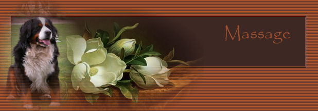

|
|
| 
|
|
Door aanraking van je hond ben je bezig met communiceren. Elk lichaamsdeel heeft een eigen betekenis bij aanraking. Bij aanraking van de schedel laat je zien dat je duidelijk zijn meerdere bent. Als je zijn rug aanraakt ben je nog steeds zijn meerdere maar je laat zien dat je zin hebt om te spelen. Aanraking op zijn flank betekent dat je vriendschappelijk met hem om wilt gaan. De nek en kin aanraken verstevigt de band tussen jullie beide. Als u uw hond seksueel wil opwinden moet u vooral zijn borst en liezen kriebelen een reu kan hierdoor makkelijk een erectie door krijgen. Onder de buik aaien word aanbevolen voor bange en onzekere honden aangezien je door deze aanraking hun ego opkrikt. Samen met strelingen op zijn schedel geef je een onzekere hond weer zekerheid in het leven.
Gaat je trouwe viervoeter op zijn rug leggen en biedt hij zijn buik aan bevestig zijn onderdanigheid door hem over zijn buik te aaien. Op deze manier bevestig je de rangorde positie tussen jullie beide.
Probeer eens het volgende, leg je hand op de rug
of schouder van de hond niet aaien alleen aanraken. De ene hond zal
weglopen de ander gaat vervelend doen geeft niks gewoon laten gaan. Doe
dit meerdere keren op een dag vooral niet dwingen of aanhouden als de
hond niet wil. Hij gaat deze aandacht prettig vinden en zal zodra je een
hand op zijn schouder legt naar je gaan kijken.
De TTouch methode is een makkelijk zelf aan te leren techniek. Een massagetechniek die een positieve invloed heeft op je hond. Om zelf een begin te maken met massage kun je alvast enkele eenvoudige massage technieken gaan toepassen. De simpelste techniek is strijken. Als de hond voor je staat ga je met beide handen aan weerskanten van de hond in een vloeiende beweging van nek naar achterhand. Na enkele keren kun je voorzichtig de druk iets vergroten. Een strijkbeweging langzaam uitvoeren en de duimen langs de ruggengraat houden. Als de hond op zijn zij ligt kun je dezelfde beweging uit voeren alleen dan begin je met één hand vanaf de nek en strijk je naar de achterhand. Zodra je bij de achterhand bent ga je met je andere hand naar de nek en maak je er een doorgaande beweging van. Op dezelfde manier als hierboven kun je met een hand cirkelvormige bewegingen maken. Kleine cirkels met de klok mee langs het lichaam van de hond. Met je duim en wijsvinger kun je langs de rand van de oren kleine cirkels maken altijd naar het uiteinde van de lichaamsdelen toewerken. Door langs de ruggengraat voorzichtig te drukken kun je een begin maken met drukpuntmassage. De duimen langs de ruggengraat plaatsen licht drukken en een duimbreedte opschuiven. Ook langs de rand van het oor kun je met duim en wijsvinger voorzichtig drukken.
Als de hond zich ontspannen en veilig voelt kan
het best gebeuren dat hij in slaap valt. Een hond kan van een goede
massage net zo genieten als een mens. Veel plezier. Ferry, de hondenfluisteraar heeft me toestemming gegeven om de hondenmassage over te nemen van zijn website. Bedankt Ferry
|
|
|
Gelieve niets van deze website over te nemen of te claimen als je eigen.
Al deze teksten zijn © van mezelf, of zijn hier geplaatst met toestemming van de schrijver.
Laatst bijgewerkt op september 2005
Webdesign en mail to: Hedera Design